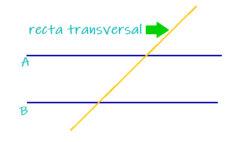

Clasificación de Ángulos
Recta Transversal
Cuando una transversal corta dos rectas se forman 8 ángulos:
- Correspondientes
- Están en la misma posición en cada cruce. Si las rectas son paralelas miden lo mismo.
- Alternos internos
- Están entre las dos rectas y en lados opuestos de la transversal. Si las rectas son paralelas, miden lo mismo.
- Alternos externos
- Están fuera de las dos rectas y en lados opuestos de la transversal. Si las rectas son paralelas, miden lo mismo.
- Colaterales internos
- Están entre las dos rectas y del mismo lado de la transversal. Si las rectas son paralelas, suman 180°.
- Colaterales externos
- Están fuera de las dos rectas y del mismo lado de la transversal. Si las rectas son paralelas, suman 180°.
- Opuestos por el vértice
- Están enfrentados cuando dos rectas se cruzan. Siempre miden lo mismo.

Ángulos Adyacentes y Consecutivos
- Adyacentes
- Están uno junto al otro, comparten un lado y un vértice.
- Generalmente, si forman una línea recta suman 180°.
- Consecutivos
- Son ángulos que comparten vértice y un lado.
- Están uno junto al otro, pero no necesariamente suman 180°.